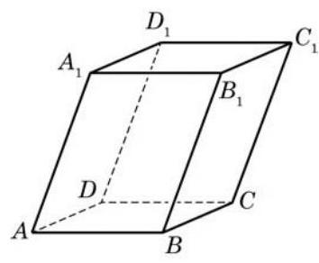
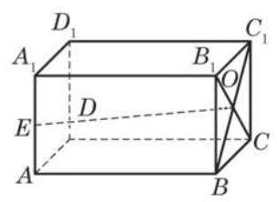
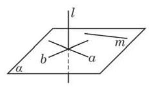
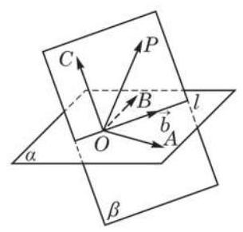
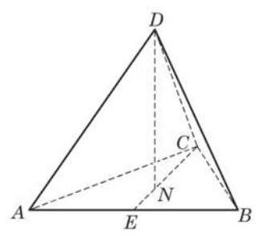
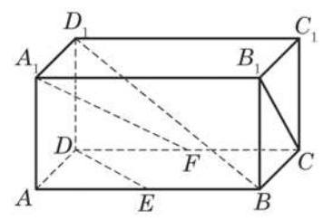
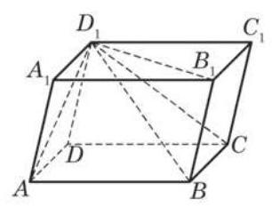
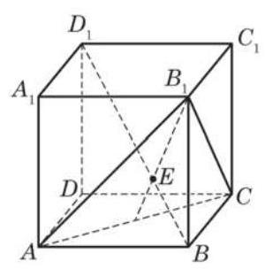

例题 1
例 1 如图 3-2-2,在长方体 中, 是棱 的中点, 是面对角线 与 的交点. 试判断向量 与 是否共面.
学生阅读版 / 沪教版高中数学
选择性必修第一册
第3章空间向量及其应用 · 保留教材主线与原题
教材与正式教参整合
我们说过空间的任意两个向量总是共面的. 但是, 空间中的三个向量却不一定共面. 例如，图 3-2-1 所示的平行六面体中， 相交于一个顶点 的三条棱 与 所对应的向量 、 与 就是不共面的.

图 3-2-1
我们在上一节中定义过的共面向量也可以用向量平行于平面的语言来刻画:如果一个向量所在的直线平行于一个平面，那么称这个向量平行于这个平面. 一组向量共面是指它们平行于同一个平面, 也就是说, 它们通过平行移动可以放到同一平面上.

图 3-2-2
例 1 如图 3-2-2,在长方体 中, 是棱 的中点, 是面对角线 与 的交点. 试判断向量 与 是否共面.
例 2 利用向量证明: 如果一条直线垂直于一个平面上的两条相交直线, 那么这条直线垂直于这个平面 (即垂直于这个平面中的任何直线).
例 2 是必修课程第 10 章中的直线与平面垂直的判定定理.

图 3-2-3
已知 如图 3-2-3, 是平面 上的两条相交直线,直线 满足 .
求证 .
已知平面上两个不共线向量的线性组合可以表示该平面上的所有向量. 是否可以做一个类推, 空间三个不共面向量的线性组合可以表示空间中的所有向量? 下面的定理对此给出了肯定的回答.
空间向量基本定理 如果 与 是不共面的向量, 那么对空间中任意一个向量 ,存在唯一的一组实数 与 ,使得
证明: 先证线性组合的存在性.
如图 3-2-4,在空间任取一点 ,作 , . OA 与 是不重合的相交直线,它们确定了一个平面 与 是不重合的相交直线,它们也确定一个平面 . 平面 与 不重合 (否则 与 共面),但有公共点 ,所以它们有唯一的交线 . 在 上任取一个非零向量 ,则 与 不共线.

图 3-2-4
再证线性组合的唯一性.
设 ,则
如果此式左边三个系数中有一个 (比如 ) 非零,那么
这与 与 不共面矛盾. 所以三个系数必须全为零,则 . 所以,线性组合是唯一的.
(1)在此四面体的棱所对应的向量中找出两组各三个不共面的向量, 并把其他棱对应的向量分别表示成这两组向量的线性组合 (互为负向量的不必另行表示), 要求第一组三个向量所在的棱有公共点, 第二组三个向量所在的棱没有公共点 (答案不唯一);

图 3-2-5
例 3 如图 3-2-5,在正四面体 中, 是面 的中心.
(2)在(1)的条件下，把 也分别表示为这两组向量的线性组合. Q
可以看出, 第一种选择有更好的对称性.
(1)设 是空间中的四个不同的点，直线 与 是异面直线，则向量 与 不共面；
(2)如果 、 是平面 上的互不平行的向量，点 、 不在平面 上，那么向量 与向量 、 不共面；
(3)如果 、 是平面 上的互不平行的向量，点 在平面 上，点 不在平面 上， 那么向量 与向量 、 不共面.
(1)用向量 、 、 表示 、 ；
(2)求 ；
(3)判断 与 是否垂直.

(第 2 题)

(第 1 题)
(1) ；
(2) .
(1) 平面 ；
(2) .

(第 4 题)
(1)求证: ；
(2)求 与 所成角的余弦值；
(3)求线段 的长.